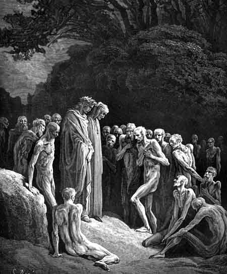

Canto XXIVBongiunta de Lucca - Exemplos de gula
|
|  |
| Os gulosos. Ilustração de Gustave Doré (século XIX). |
Muitos outros ele foi me mostrando um a um que pareciam contentes ao serem nomeados. Nenhum pareceu ressentido. Vi o festeiro Ubaldin da la Pila, Bonifácio e Marchese, que em Forlí bebeu com bem menos sede que aqui, sem ter conseguido saciar-se em vida. Quem mais se destacou na multidão foi o espírito de Lucca, que me disse algo como "Gentucca." Eu então lhe falei:
- Ó alma que tanto parece querer falar comigo. Fala para que eu possa te ouvir!
- Uma mulher nasceu - disse ele - que ainda não usa aliança. Ela te fará ter amor por minha cidade, mesmo que muitos a repreendam. Lembra desta minha profecia e se duvidoso foi o meu murmúrio, o futuro deixará as coisas mais claras. Mas dize-me se quem eu vejo é o próprio autor daquele que nos trouxe as novas rimas, que começam: Mulheres que haveis compreensão do amor.
- Sim, sou eu - retornei-lhe - Sou eu que quando Amor me inspira, presto atenção, e da maneira que o escuto falar ao coração, passo à forma da poesia.
- Ó irmão - disse ele -, agora posso ver o nó que afastou a mim, a Guittone e ao Notario desse doce estilo novo que eu ouço! Agora vejo claramente que vossas asas seguem fielmente o ditado desse Amor, o que conosco não aconteceu. Quem procurar mais a fundo não encontrará outra diferença entre um estilo e o outro.
Contente com o que falara, ele se calou. Pouco depois, os outros espíritos se organizaram em fila e começaram a ir embora. Forese, que ainda estava ao meu lado, perguntou:
- Quando voltarei a vê-lo?
- Não sei quanto tempo ainda viverei - respondi-lhe - mas mesmo que eu volte logo, o meu coração já estará na margem esperando, pois o lugar onde nasci para viver, dia após dia vai se desfazendo de sua gente boa e parece disposto à triste ruína.
- Ora então vai - disse ele - pois já vejo aquele que tem a maior culpa, preso à cauda de uma besta, sendo levado para o vale onde não há perdão. A besta corre mais e mais até que ela solta o corpo, que se desfaz violentamente. Aquelas esferas - disse, olhando para o céu - não haverão de girar tantas vezes antes que as coisas obscuras que agora te disse tenham se tornado claras. Agora tenho que ir, pois o tempo aqui é caro e não posso te seguir.
Assim ele partiu, em passo acelerado, e eu fiquei na estrada sozinho com os outros dois. Já estávamos agora diante de uma outra árvore que, de longe, parecia carregada de frutos. Debaixo da árvore havia um grupo de almas que gritavam em vão para as frondes. Elas acabaram desistindo. Pouco depois, chegamos nós àquela árvore de onde saiu uma voz gritando:
- Passai e não chegueis perto! Lá no alto está a planta que deu seu fruto a Eva. Foi sua semente que deu origem a esta que vês.
Então passamos, eu Virgílio e Estácio, pela beirada da encosta. A árvore continuou a falar:
- Lembrai-vos dos centauros que lutaram bêbados contra Teseu, e dos Hebreus que bebiam avidamente na fonte, e que não puderam acompanhar Gideão para Madiana.
Andando encostados a uma das beiras da estrada passamos, escutando esses exemplos de gula até que fomos surpreendidos com uma voz, que disse:
- Que estais pensando aí sozinhos, os três?
Virei a cabeça para tentar descobrir de onde vinha essa voz e lá estava o brilho rubro e intenso do ser que ainda falou:
- Se desejais subir, deveis dobrar aqui, neste caminho.
Eu estava cego pelo seu brilho e fui logo para trás dos meus guias, deixando que o meu ouvido mostrasse o caminho. Depois senti uma brisa leve na minha fronte e tenho certeza que também senti uma pena, que deixou um perfume de ambrosia. Depois ouvi:
- Bem-aventurados são os que brilham tanto na graça, que não são presos pelo amor do apetite, mas satisfazem-se com a parte que lhes é justa.